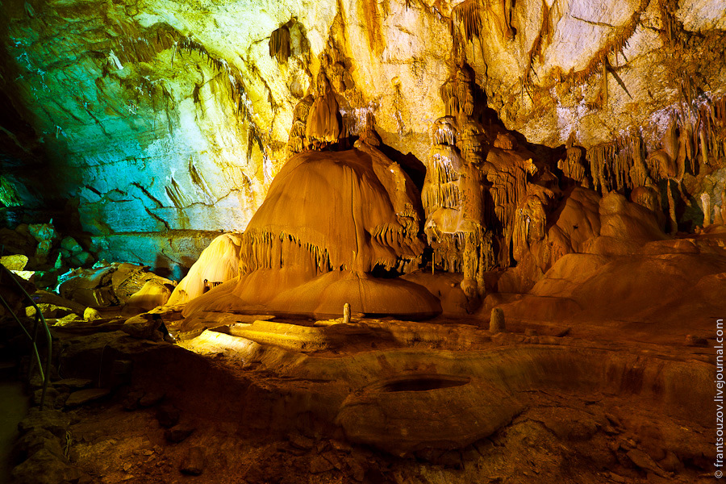

Києво-Печерська лавра
Києво-Печерська лавра – перший монастир на Русі та символ віри. Над потужними водами Дніпра, на його мальовничих схилах, сяючи золотими банями, красуються величні храми.
Більше інформації

Мармурова печера
У пошуках того, що подивитися в Україні, обов'язково необхідно заглянути до Мармурової печери, яка вважається однією з найкрасивіших у Європі. Відкрита у 1987 році і з того часу стала улюбленицею туристів.
Більше інформації